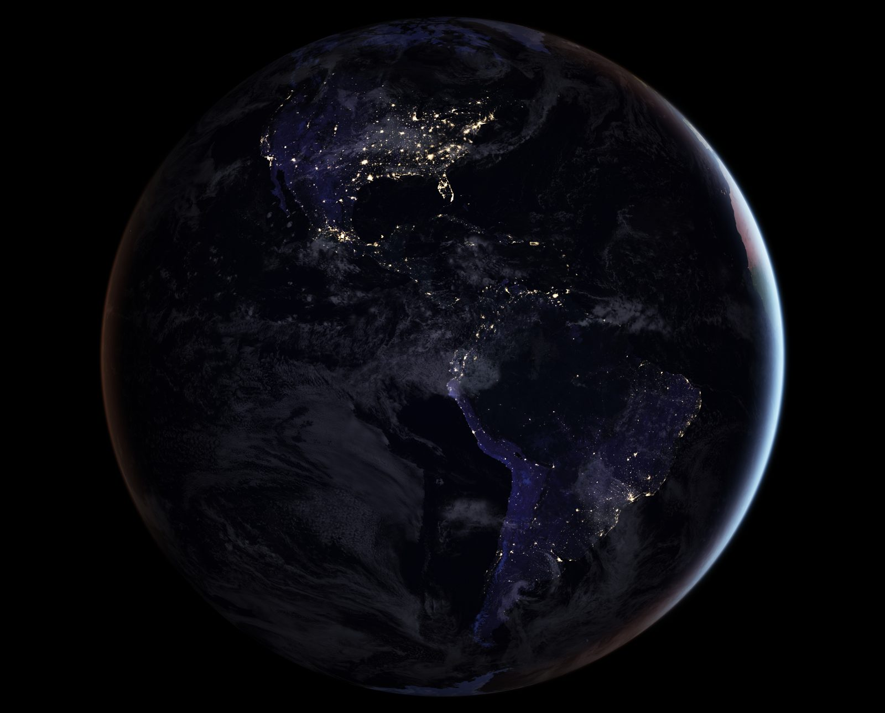
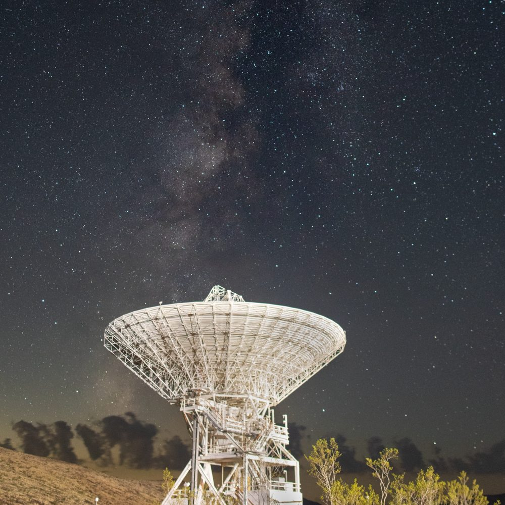

L2-L3 · Flow and Positioned Relationships
A Disappearing Night Sky

Did you know nearly 80% of North Americans can't see the Milky Way from where they live? A study by Falchi et al. (2016) found that more than 80% of the world's population lives under skies affected by light pollution. In the United States and Europe, this number increases to more than 99%.
Streetlights, buildings, parking lots, and even the lights outside our homes contribute to this problem. When artificial light travels into the sky, it creates something called skyglow. This makes the sky appear brighter and the stars harder to see.
“We’ve got whole generations of people in the U.S. who have never seen the Milky Way. It’s a big part of our connection to the cosmos – and it’s been lost.”
Think about the difference between looking at the stars in a busy city and looking at them while camping somewhere far from town. The difference in how many stars are visible is often surprising. Unfortunately, many people grow up without ever experiencing a sky filled with stars. Something as simple as stargazing is becoming harder to enjoy.
A Growing Problem
One of the most surprising things about light pollution is how quickly it is getting worse. In 2023, researchers studied observations collected by volunteers through a project called Globe at Night. They found that the brightness of the night sky increased by an average of 9.6% each year between 2011 and 2022 (Kyba et al., 2023).
At this rate, the brightness of our night sky would double in less than eight years. What makes this even more surprising is that previous satellite measurements showed an increase of only about 2% each year.
Satellites have a harder time detecting certain types of light, which helps explain why there is such a big difference between these findings.
As more neighborhoods, shopping centers, and businesses are built, more artificial lighting is added to our communities. If we continue using outdoor lighting without considering its impact, future generations might grow up seeing even fewer stars than we do today.
L4-L5 · Layers, Shapes, and Fallback
More Than Missing Stars

While losing our view of the stars is disappointing, light pollution affects much more than the night sky. Many animals and insects rely on natural periods of light and darkness to survive.
Have you ever noticed how many insects gather around an outdoor light at night? According to the National Park Service, artificial lights attract insects from surrounding areas and interfere with their natural behaviors. This also affects other animals that depend on insects for food.
Another surprising part of light pollution is how much energy we waste. The National Park Service estimates that approximately 35% of outdoor lighting is wasted because lights are poorly positioned or lack proper covers. This results in about three billion dollars in wasted energy.
By making better choices about our outdoor lighting, we can help protect wildlife, save energy, and improve our view of the night sky. Even small changes make a difference.
Bringing Back the Stars
The good news is light pollution is reversible (National Wildlife Federation, 2016)! We do not need to turn off every light in our neighborhood to make a difference. Instead, we need to be more thoughtful about how we use them.
The National Park Service recommends using motion sensors and timers so outdoor lights are only on when needed. Switching to warmer lightbulbs and using light fixtures that point toward the ground are also simple ways to reduce light pollution.
Another fun way to get involved is through Globe at Night. This project allows people to contribute to scientific research by observing the stars and reporting what they see. It is also a great opportunity for families to spend time outside and learn more about the night sky together.
The night sky is something everyone deserves to experience. By making a few small changes in our everyday lives, we can help protect it for ourselves and future generations. Hopefully, looking up and seeing a sky full of stars will become a more common experience again.